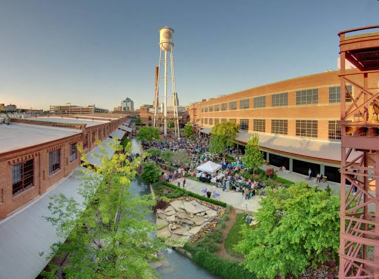
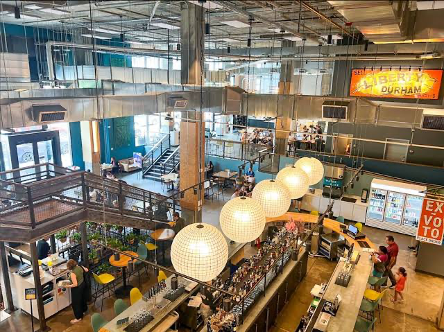
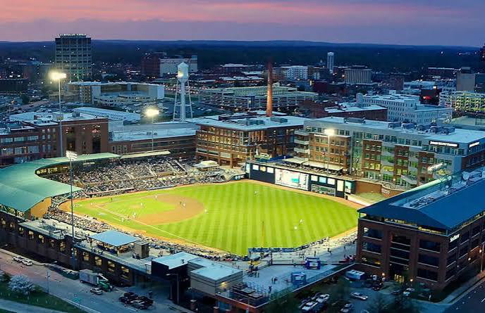
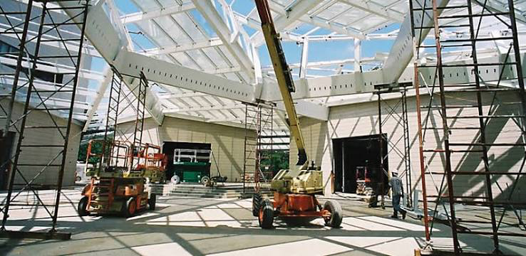
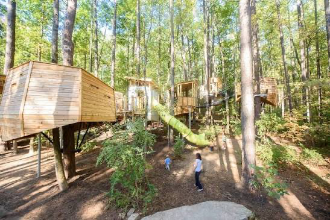

Stroll & Explore
American Tobacco Campus
Wander the historic brick campus beside the ballpark, where old tobacco warehouses, a flowing waterway, restaurants, and patios come together in the heart of downtown.
Plan a VisitMake a weekend of it! Here are a few favorite ways to eat, wander, and enjoy the Bull City while you’re in town.

Stroll & Explore
Wander the historic brick campus beside the ballpark, where old tobacco warehouses, a flowing waterway, restaurants, and patios come together in the heart of downtown.
Plan a VisitFresh Air
Slow down among 55 acres of landscaped gardens, winding paths, and quiet overlooks next to Duke’s beautiful West Campus.
Visit the Gardens
Eat & Drink
Gather the whole crew without having to agree on one menu. This lively downtown hall offers local food vendors, coffee, cocktails, and plenty of communal seating.
See the Vendors
Play Ball
Catch a game at Durham Bulls Athletic Park for an easygoing evening of baseball, ballpark snacks, and iconic Bull City views.
Check the Schedule
Art & Culture
Spend an hour or an afternoon with modern, contemporary, and global art at Duke University’s welcoming campus museum.
Explore the Museum
Family Favorite
Perfect for curious kids and grown-ups alike, with hands-on science, outdoor trails, animals, and the beloved Magic Wings butterfly house.
Discover More